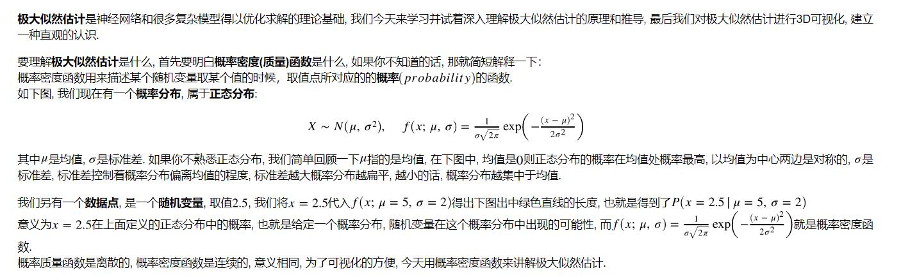
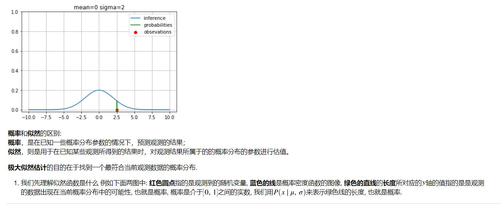
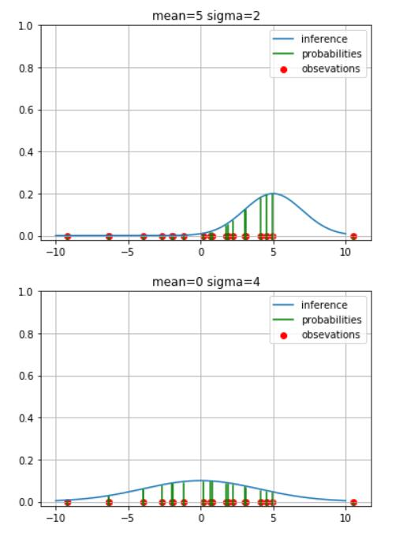

极大似然估计是神经网络和很多复杂模型得以优化求解的理论基础, 我们今天来学习并试着深入理解极大似然估计的原理和推导, 建立一种直观的认识.
要理解极大似然估计是什么, 首先要明白概率密度(质量)函数是什么, 如果你不知道的话, 那就简短解释一下：
概率密度函数用来描述某个随机变量取某个值的时候，取值点所对应的的概率的函数.
如下图, 我们现在有一个概率分布, 属于正态分布:
其中是均值,
是标准差. 如果你不熟悉正态分布, 我们简单回顾一下
指的是均值, 在下图中, 均值是
则正态分布的概率在均值处概率最高, 以均值为中心两边是对称的,
是标准差, 标准差控制着概率分布偏离均值的程度, 标准差越大概率分布越扁平, 越小的话, 概率分布越集中于均值.
我们另有一个数据点, 是一个随机变量, 取值, 我们将
代入
得出下图出中绿色直线的长度, 也就是得到了
意义为在上面定义的正态分布中的概率, 也就是给定一个概率分布, 随机变量在这个概率分布中出现的可能性, 而
就是概率密度函数.
概率质量函数是离散的, 概率密度函数是连续的, 意义相同, 为了可视化的方便, 今天用概率密度函数来讲解极大似然估计.

概率和似然的区别:
概率，是在已知一些概率分布参数的情况下，预测观测的结果；
似然，则是用于在已知某些观测所得到的结果时，对观测结果所属于的的概率分布的参数进行估值。
极大似然估计的目的在于找到一个最符合当前观测数据的概率分布.
- 我们先理解似然函数是什么 例如下面两图中: 红色圆点指的是观测到的随机变量, 蓝色的线是概率密度函数的图像, 绿色的直线的长度所对应的
轴的值指的是是观测的数据出现在当前概率分布中的可能性, 也就是概率, 概率是介于
之间的实数, 我们用
来表示绿色线的长度, 也就是概率.

- 我们假设有一组观测到的数据, 一共有
个,
我们推断这一组数据属于一个概率分布, 是一个正态分布, 它的概率密度函数为, 我们将
里的数据点带入到
:
- 那么这一组数据
在假设的概率分布中的出现的可能性就是他们概率的乘积:
上式中, 我们用
来表示似然函数, 已知的观测到的数据点
的可能性, 由此可见，似然函数也是一种条件概率函数，但我们关注的变量改变了.
- 从下面两图可得, 上图图中所假设的概率分布求出的似然函数取值显然比下面的小, 因为有很接近于
的数值, 这让似然函数乘积的结果变得非常小. 我们可以得出结论, 下图的概率分布参数更符合观测到的数据点的概率分布,而最大似然估计的目的就是找到一个最符合当前数据的分布的参数.
我们做个试验:
- 先从均值为
正态分布中随机抽取
个数据点, 作为我们观测到的数据; 之后我们定义一个估计参数的取值范围, 均值在
之间, 标准差在
之间;
- 然后我们将所有的数据点和我们估计的每一组参数代入似然函数, 也就是
中, 求得每一组参数的似然值, 3.下图可见, 似然函数的值约在
时取得极大值(因为数据点太少有些误差);
- 我们发现似然函数的图像是凸函数, 我们就可以用很多优化的方法求它的极大值了.
- 找到似然函数极大值的过程就是极大似然估计的过程.

我们看到上图中的最高点, 是产生观测数据的真实概率分布的参数, 但是似然函数输出的值极小, 最高的值仅有
对数似然值: 我们对似然函数取
, 就得到了对数似然函数:
为什么要对似然函数取对数?
- 首先原本的似然函数是很多条件概率的乘积, 我们在找极大值的时候需要求似然函数的导数, 而乘积的导数不方便计算, 取对数可以吧乘除变成加减;
- 对似然函数取对数, 原本函数的极大值的位置没有改变;
- 如果观测到的数据点比较多, 原始似然函数的乘积可能非常接近于0, 甚至超出计算机的储存位数限制, 这样就全变成0了, 取对数可以把接近于
扩展到了
到
我们下面对进行3D可视化, 可看到原始的似然函数和对数似然函数的最高点是一样的位置.
对数函数单调递增，不改变极值点
本文转载自： https://github.com/aespresso